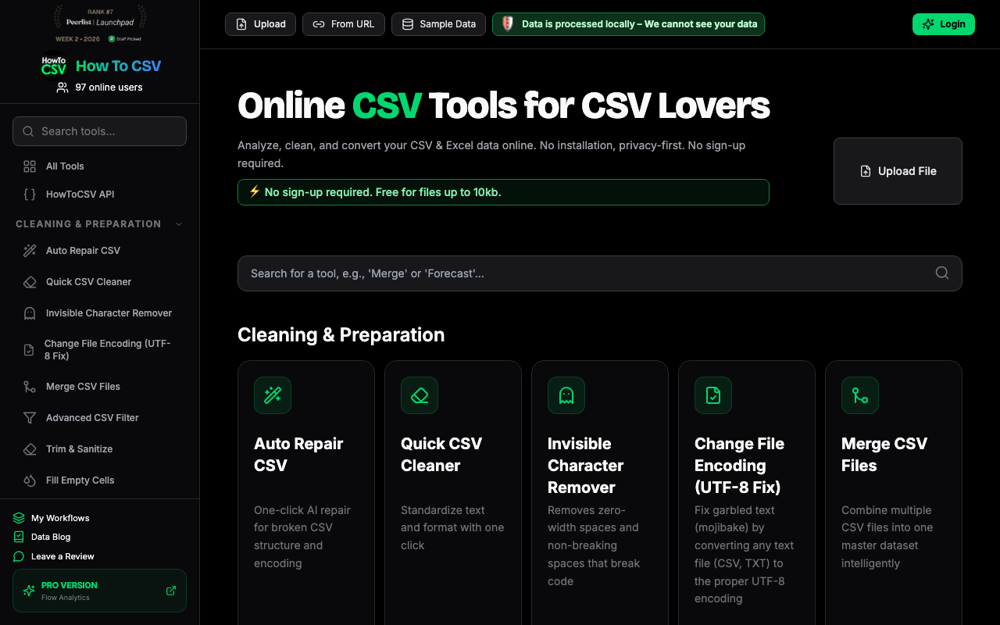
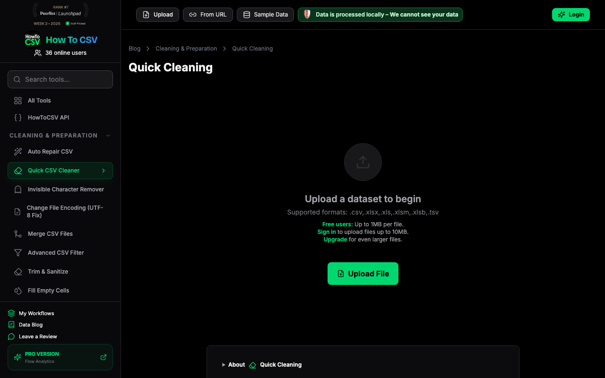
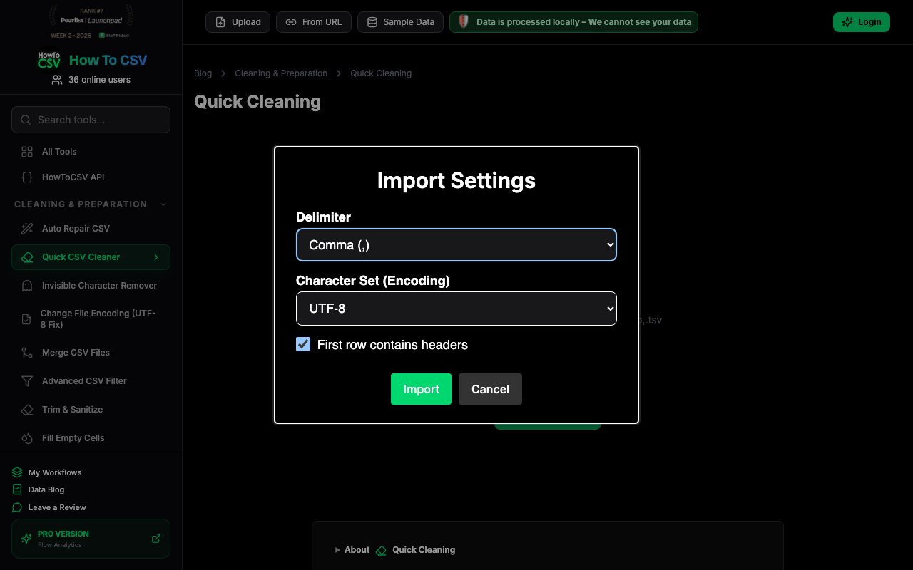
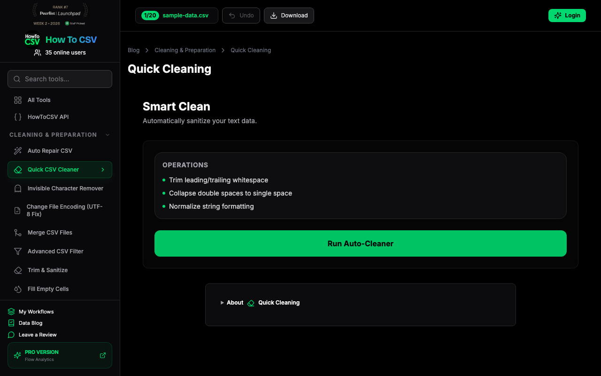
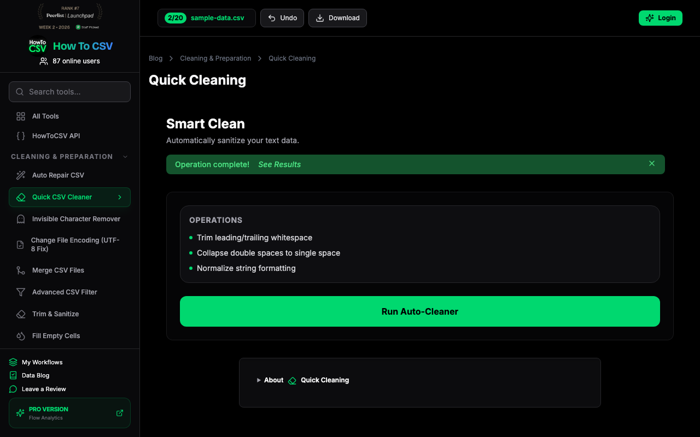
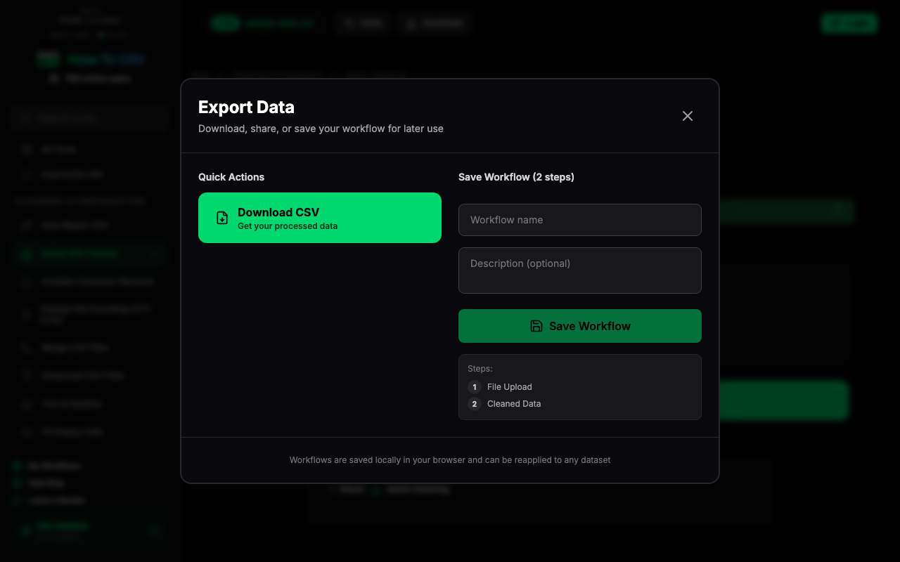

I'm looking for a quick way to clean CSVs without writing a script. The 'Quick CSV Cleaner' looks like exactly what I need for a technical evaluation. I'll start by checking out the sample data to see how it handles imports.

I'm already on the Quick CSV Cleaner page. I'll use the sample data to see how it handles things locally before I'd ever trust it with a real dataset.

Import settings are standard. Comma, UTF-8, and headers detected—exactly what I'd expect for sample data. I'll just hit import and see how it handles the grid.

Imported the sample data, now I'll run this auto-cleaner to see if it actually gives me a summary of what it's changing. I need to know if it's a black box or if it's transparent about the transformations.
It says operation complete, but I need to see the actual data grid. If I can't verify what it just normalized, I'm not trusting this with real stakeholder requests.

Just a standard data grid. No diffs, no highlighted changes. This is exactly why I hesitate with these tools—it's a black box. I'll close this and see if the download includes an audit log, otherwise I can't trust it.

The preview didn't show what actually changed, just the raw output. It lists generic operations, but I need a real diff. Let's see if the download works or if it's gated.

It says workflows are saved locally, which is nice, but I'm still blind to what exactly changed. Without a clear diff or operation summary, this is just a black box. I'll stick to pandas.